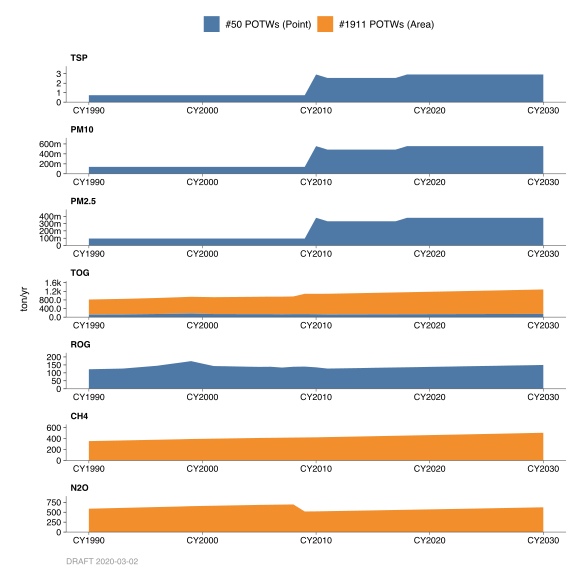
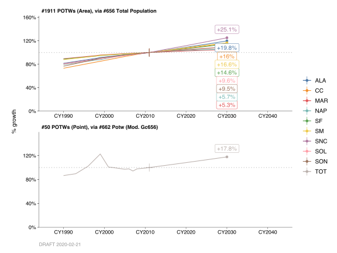
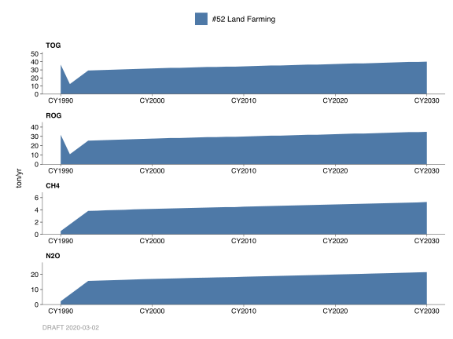
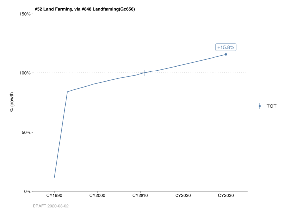
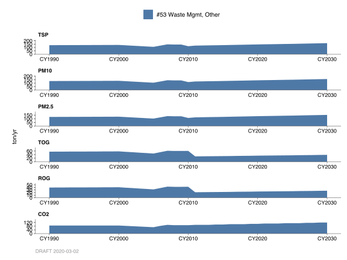
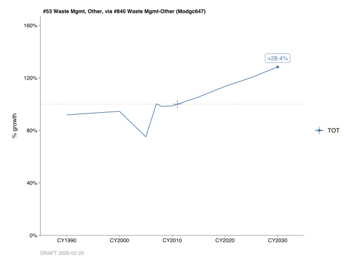
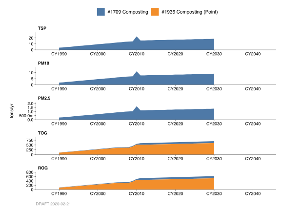

Chapter 5 Waste Management
5.1 Publicly Owned Treatment Work
5.1.1 Emissions
Introduction
A typical Publicly Owned Treatment Work (POTW) facility collection system will contain a lift station, trenches, junction boxes and manholes. Wastewater streams normally are introduced into the POTW collection system through individual or area drains, which can be open to the atmosphere or sealed to prevent wastewater contact with the atmosphere. Emissions are emitted from wastewater collection, treatment, and storage systems through volatilization of organic compounds at the liquid surface.
Methodology
Category 50 (POTW) contains organic emissions from point sources only. The emissions in this category are from municipal wastewater treatment plants. All plants operating in the District are in the Data Bank System. The Data Bank contains throughput information submitted by individual plants by sources. Emissions are then calculated by using specific emission factors and control factors, if any, for a particular source operation supplied by the company.
The greenhouse gas (GHG) emissions from these permitted POTW facilities in Category #50 come from combustion sources only. These GHG, namely CO2, Biogenic CO2, CH4, and N2O are calculated in the combustion source categories (i.e. Category Nos. 291, 292, 304, 307, 312, etc.).
Other process and fugitive GHG emissions (CH4 and N2O) from POTW facilities are estimated as an area source in Category 1911. The CH4 emissions from POTW’s (centralized anaerobic) and the N2O emissions from wastewater treatment effluent emissions and biological denitrification were estimated using the California Air Resources Board’s Documentation of California’s Greenhouse Gas Inventory (4th Edition, Category: Waste, IPCC: 4D1 – Wastewater Treatment and Discharge). These area source GHG emissions were estimated for the BAAQMD as a whole and not to any specific POTW facility.
Monthly Variation
The data bank contains percentage of throughput data for each of the four 3-month seasonal periods: (December - February, March - May, June - August, September - November). This throughput data was uniform throughout the week for both categories.
County Distribution
The county location of each processing plant as reported in the databank is used to distribute emissions into each county for Category 50. The emissions in Category 1911 were distributed according to each District’s county population.
5.1.2 Trends
History

The historical growth profile for Category 50 was based on a combination of prior emissions data (back to 1990) and the Association of Bay Area Government’s (ABAG’s) 2009 Total Population data. The historical growth profile for Category 1911 was based on ABAG’s 2009 Total Population data.
Growth

Projections to year 2030 for both categories were based on ABAG’s 2009 Total Population growth profile.
By: Stuart Schultz Date: January 2014 Base Year 2011
5.2 Landfills, Fugitive Point and Area Sources, Landfill Flares, & Landfill Internal Combustion Engines
5.2.1 Emissions
Introduction
These four categories account for emissions from landfills in the Bay Area. Categories 1157 and 1158 account for organic and greenhouse gas (GHG) emissions (Biogenic CO2, CH4, and N2O) from point and area source landfills, respectively. Category 1157 (Point Source Landfills) also has particulate emissions from activities such as vehicle traffic on unpaved roads, bulldozing, scraping, etc. Categories 1686 and 1687 account for point source criteria pollutant (particulate, organic, NOx, SOx, and CO) and GHG emissions (CO2, Biogenic CO2, CH4, and N2O) from the combustion of landfill gases from flares and internal combustion engines (ICE), respectively, at landfills. Landfill gas may also be combusted in ICE’s outside landfills; however, they are covered in Categories 303 (Reciprocating Engines—Gas Fuels) and 305 (Turbines—Gas Fuels).
Landfill gas production rates and compositions vary greatly, even within a single landfill. There are no comprehensive data leading to the development of generalized emission factors for the Bay Area. Biodegradation takes place over an extended period of time, therefore, waste generated in prior years must be considered for emissions calculations. It is assumed it takes 15 years for maximum biodegradation to take place. However, biodegradation occurs, to a lesser extent, 35 years and beyond. (For emission calculation purposes in Categories 1157 and 1158, 40 years for biodegradation was used.) Prior to the mid-1960’s, it was assumed that 60% of the waste was buried in landfills and 40% of the waste was burned on-site. After that it was assumed the burned waste was diverted to the landfills.
Methodology
Point Sources
It is assumed all active landfills within the District are permitted sources. Inactive landfills less than 30 years old and have greater than one million tons of refuse in place are also considered permitted. These permitted landfills are considered to be point sources; their throughput and emission information has been inventoried in the District’s database since the early 1980’s. Although most point source landfills have collection systems associated with them, there are several landfills that do not have a collection system.
Landfills with Collection Systems
For those landfills with active collection systems, it is assumed that 25% escapes as fugitive landfill gas 75% of the gases are captured and are either destroyed by flaring or burned in an internal combustion engine (ICE) or turbine. Those captured gases that are flared or burned in an ICE or turbine are accounted for and reported to the California Air Resources Board (CARB) under our combustion “C” sources. The following are a list of source codes associated with the criteria pollutant and GHG emissions from landfills with collection systems:
G7145511. The throughput associated with this source code represents the amount of landfill gas collected for a particular year. The District uses the throughput and emission factor data to calculate the fugitive methane and GHG emissions from this source based on the following assumptions:
The landfill gas collection system captures 75% of the total amount of landfill gas generated at the site (AP-42, Chapter 2.4); the remaining 25% of landfill gas is assumed to be fugitive emissions.
Landfill gas, on average, contains 55% methane (CH4), 40% carbon dioxide (CO2), with the remaining 5% nitrogen, oxygen, non-methane organic compounds, etc.
In accordance with the Intergovernmental Panel on Climate Change (IPCC) and EPA GHG inventory procedures, 10% of the CH4 fugitive landfill gas is oxidized into CO2. The N2O emission factor was provided by CARB in their Documentation of California’s Greenhouse Gas Inventory (Category: Managed waste Disposal Sites, Sector: Industrial: Landfills, not specified).
Constants used in the emission factor calculations are as follows:
- The standard molar volume of gases is 387.006 scf/lb-mole.
- The molecular weight of CH4 is 16.043 lbs/lb-mole.
The molecular weight of CO2 is 44.010 lbs/lb-mole.
The CO2 emissions from this source are considered to be biogenic.
Combustion Sources Using Landfill Gas. The assumed 75% landfill gases captured are combusted in the “C” sources by flaring or used as fuel in turbines or IC engines. A 99% destruction efficiency of TOG is assumed for flaring operations; a 97% destruction efficiency of TOG is assumed when landfill gas is burned in an internal combustion engine. A slightly higher TOG destruction efficiency, 99% or more, is achieved in turbines. Particulate, NOx, SOx, and CO emissions are also considered as products of combustion.
Greenhouse gases (CO2, CH4, and N2O) emissions are also calculated from these combustion sources. The CH4 and CO2 emission factors were based from both EPA AP-42 and District sources. The N2O emission factor was based on California Energy Commission data. The CO2 emissions emitted from these combustion sources are considered to be biogenic.
G7145580. This source code represents the fugitive ROG emissions with throughput given as the amount of refuse as tons-in-place. There are no methane or GHG emissions associated with this source.
G7145540. This source code represents fugitive ROG emissions from the on-site handling of contaminated soils. This soil is usually contaminated from gasoline or diesel, and the units associated with this material code are in tons/yr. There are no methane or GHG emissions associated with this source.
G7145466. This source code represents particulate PM10 emissions from landfill activity that includes vehicle traffic on unpaved roads, bulldozing, scraping and dumping activities, wind erosion from land cover, etc. Throughput is based on tons of incoming waste for a particular year.
Landfills without Collection Systems
For those few landfills without collection systems, the following is the source code associated with this type of landfill:
G7159580. The throughput from this source code represents the total tons in place of refuse. The District uses the throughput and emission factor data to calculate the fugitive organic and GHG emissions from this type of landfill based on the following assumptions:
The landfill gas generation rate (LGR) of methane is dependent upon the age of landfill, moisture content, type of refuse, etc. and will vary from landfill to landfill.
The landfill gas composition for these types of landfills is approximately 50% CH4 and 50% CO2. (There is additionally a small amount of ROG, but for calculation purposes assume the equal percentage split.)
The constants used in emission factor calculations are the same as those used for Source Code G7145511.
In accordance with the Intergovernmental Panel on Climate Change (IPCC) and EPA GHG inventory procedures, 10% of the CH4 fugitive landfill gas is oxidized into CO2. The N2O emission factor was provided by CARB in their Documentation of California’s Greenhouse Gas Inventory.
The CO2 emissions from this source are considered to be biogenic.
Area Sources
Area sources consist of inactive landfills that had less than 1 million ton of refuse in place. These landfills were closed many years ago and data is very limited. In 1999, it was estimated area source throughputs comprised 10% of the total waste in place. In future years, this value will decrease linearly because of less contribution from these area sources. In 2008, it was estimated area source throughputs comprised 7.75% of the total waste in place. The assumptions used estimate criteria pollutant (organics) and GHG (CO2, CH4, and N2O) emissions listed below:
The LGR of methane for these closed landfills was 0.030 mcf/year – ton-in-place.
The landfill gas composition for area source landfills is similar to point source landfills without collection systems, namely 50% CH4 and 50% CO2. (There is additionally a small amount of ROG, but for calculation purposes assume the equal percentage split.)
The constants used in emission factor calculations are the same as those used for Source Code G7145511.
The ROG factor for area source landfills is the same as for point source landfills at 0.0089.
In accordance with the Intergovernmental Panel on Climate Change (IPCC) and EPA GHG inventory procedures, 10% of the CH4 fugitive landfill gas is oxidized into CO2. The N2O emission factor was provided by CARB in their Documentation of California’s Greenhouse Gas Inventory.
The CO2 emissions from this source are considered to be biogenic.
Monthly Variation
Estimated daily emissions are assumed to be uniform for all months of the year. This is due to burial/insulation of the refuse that reduces impact of ambient temperature changes, allowing somewhat uniform biodegradation throughout the year.
County Distribution
Point Source Categories (Cat. Nos. 1157, 1686, and 1687)
The data bank system contains information on the county location of each landfill; hence, emissions are distributed to the counties accordingly. It is assumed San Francisco County has had no landfills within their boundaries; therefore, their refuse is transported to the other counties.
Area Source Category (Cat. No. 1158)
The county fractions were based in the number of closed landfills (not accounted for by the District) in the in each county. This data was obtained from the Solid Waste Information System (SWIS) at CalRecycle’s website (http://www.calrecycle.ca.gov).
5.2.2 Trends
History & Growth

Category Nos. 1157 and 1158’s historical and projected growth factors were based on the following:
- Association of Bay Area Government’s (ABAG’s) Population growth profile,
- Percentage of cumulative waste generation attributed to point or area source,
- Per capita waste generation, and
- Overall collection efficiency of the landfill gas.

As mentioned previously, prior to the mid-1960’s, it was assumed 60% of the waste was buried in landfills (point source) and 40% of the waste was burned on-site, as in backyard incinerators. By 1999, it was assumed that 90% of the cumulative waste generation was attributed to point sources, and the remaining 10% was attributed to area sources. By 2030, it is assumed the point source percentage will increase linearly to 97.75% and the area source percentage will decrease linearly to 2.25%
Since the State of California passed a mandate (Assembly Bill 939) that required a reduction in waste generation, per capita waste generation in the District has decreased. Until 1990, this factor was approximately 1.32 tons/person/year; in 2008, it had decreased to 0.79 tons/person/yr. By 2030, it is assumed the per capita waste generation in the District will decrease linearly to 0.70 tons/person/year.
In addition to what was previously mentioned, Categories Nos. 1686 and 1687 historical and projected growth factors were based on the following:
Prior to 1984 (the year Reg. 8, Rule 34 was passed), it was assumed all landfill gases were emitted as fugitive emissions. By 1996, the overall collection efficiency at landfills was assumed to be 75%, with 25% of the landfill gases emitted as fugitive emissions. Between those two years, the collection efficiencies were interpolated.
Control

Currently, Regulation 8, Rule 34 (Solid Waste Disposal Sites) requires that certain landfills process landfill gases through a gas collection and emission control system such that:
There are no leaks that exceed 1000 PPM by volume measured as methane at any component or connector of the landfill gas collection system; and
The collected gases are process in an enclosed ground type flare with a TOG destruction efficiency of at least 98% by weight; or
The collected gases are processed in an energy recovery device or emission control system that reduces the amount of TOG by at 97% by weight.
By: Stuart Schultz Date: January 2014 Base Year 2011
5.3 Land Farming
5.3.1 Emissions
Introduction
Land farming is a process in which waste (biosolids), primarily from dried sewage sludge, is deposited and spread on rural, open lands. Greenhouse gas emissions, namely methane (CH4), and nitrous oxide (N2O) were also calculated for this category.
Methodology
Emissions for this category are calculated by multiplying the annual activity (throughput) value for a particular year by the emission factor in question.
The annual activity (throughput) for this category was obtained from the March 2009 report “Bay Area Biosolids Management: Challenges, Opportunities, and Policies.” The amount of biosolids generated in in the Bay Area in 2007 was estimated to be 158,000 dry tons. Approximately 19% of that amount, or 30,020 dry tons, was “land applied” for Land Farming purposes. The Association of Bay Area Governments’ (ABAG’s) Total Population growth profile was used to obtain the 2011 throughput value of 31,028 dry tons/year.
The emission factor for reactive organic gases (ROG) was obtained from the California Integrated Waste Management Board Contractor’s Report to the Board, “Emissions Testing of Volatile Organic Compounds from Greenwaste Composting at the Modesto Compost Facility in the Sab Joaquin Valley”, October 2007. The ROG emission factor for greenwaste /food scrap composting ranged from 1.3 – 2.6 lbs./ton composted. A mid- point value of 1.95 lbs./ton was used.
A ROG factor of 0.8689 was used to calculate the total organic gas (TOG) emission factor. This ROG factor was obtained from data compiled by the San Joaquin Valley Air Pollution Control District for greenwaste composting. The TOG emissions factor of 2.24 lbs./ton was calculated by dividing the ROG emission factor by the ROG factor. The CH4 emission factor of 0.29 lbs./ton was calculated by subtracting the TOG emission factor by the ROG emission factor.
The N2O emission factor of 1.1997 lbs./ton was obtained from the 2006 Intergovernmental Panel on Climate Change (IPCC) Guidelines for National Greenhouse Gas Inventories, Chapter 4, Biological Treatment of Solid Waste.
Monthly Variation
For monthly variation, the emissions are distributed evenly throughout the year.
County Distribution
Data attributing the throughput activity to the various Bay Area counties was obtained from the March 2009 report “Bay Area Biosolids Management: Challenges, Opportunities, and Policies.”
5.3.2 Trends
History

Until the early 1990’s, land farming consisted of wastes more from the industrial sector. Most of these industrial wastes are now transported outside the District to be spread on the land. Prior to 1990, the growth was based on the ABAG’s 2009 Manufacturing Employment growth profile. Between 1990 and 1993 growth was interpolated.
Growth

Emissions after 1993 are assumed to grow at a rate similar to the population as provided by ABAG’s 2009 Population growth profile.
By: Stuart Schultz Date: January 2014 Base Year 2011
5.4 Other Waste Management
5.4.1 Emissions
Introduction
This category accounts for emissions from other industrial and commercial - waste management facilities. Emissions from this category were obtained from point source data only, as contained in the District’s Data Bank. Greenhouse gas emissions, namely carbon dioxide (CO2) was also calculated for this category.
Methodology
This category contains emissions from point sources only. The Data Bank contains throughput information submitted by individual plants by sources. Emissions are then calculated by using specific emission factors and control factors, if any, for a particular source operation supplied by the company.
Monthly Variation
The data band contains percentage of throughput data for each of the four 3-month seasonal periods: (December - February, March - May, June - August, September - November).
County Distribution
The data bank system contains information on the county location of each processing plant; hence, emissions are distributed to the counties accordingly.
5.4.2 Trends
History

The historical growth profile was based on a combination of prior emissions data (back to 2005) and the Association of Bay Area Government’s (ABAG’s) 2009 Manufacturing Employment growth profile.
Growth

Projections to year 2030 were also based on ABAG’s 2009 Manufacturing Employment growth profile.
By: Stuart Schultz Date: February 2011 Base Year 2008
5.5 Composting
5.5.1 Emissions
Introduction
Composting is a biological process where organic materials, such as leaves, grasses, etc., are decomposed by microorganisms to create a nutrient-rich, soil-like material. Composting most often takes place in aerobic conditions, however, under certain conditions, composting can occur under anaerobic conditions. These conditions include compost pile structure and density, particle size, low oxygen supply, moisture content, low oxygen supply, etc. Methane emissions increase under anaerobic conditions. Therefore, proper monitoring and management are very important to maintain aerobic conditions for efficient composting operation.
The composting process includes the following steps:
- Feedstock Preparation,
- Composting,
- Curing,
- Screening, and
- Storage.
In the feedstock preparation step, the composted organic materials are screened and, if required, processed in a grinder to achieve the best composting conditions. This mixture is then placed in rows or piles where the decomposition process begins. The initial phase of composting, lasting for about one month is very active and generates temperatures high enough to kill weed seeds and pathogens. After this “active” phase, the material is cured at a slower rate and temperature. During this phase, the moisture content is reduced and a more stable product is produced. Once the compost is cured, the material is screened to produce the desired product and then stored prior to final distribution and use.
Methodology
In 2011, there were approximately 32 composting facilities1 in the Bay Area. Ten (12) of these facilities are permitted by the District and considered point sources (Category 1709). The point sources contain annual activity (throughput) information for each applicable source that is stored in the District’s Data Bank. Reactive organic (ROG) emissions are then calculated by using emission factors (generalized or specific) and control factors, if any, for a particular source operation supplied by the company. Some related compositing activity (i.e. windrow and storage activities, etc.) are also permitted and particulate emissions are calculated.
Note: The composting operations that involve mushroom farming were not included in this count. The 2006 IPCC Guidelines for National greenhouse Gas Inventories does not assign mushroom farm media preparation to the waste sector for emission inventory development. It falls under the Industrial Processes and Product Use, Food and Beverage Industry, or Agriculture, Forestry, and Other Land Use, manure Management, Poultry (3A2i).
The other approximate 20 facilities are considered area sources (Category 1936) where annual throughput, criteria pollutant emission factors (TOG and ROG), and control activity (if any) are estimated. The TOG and ROG emissions are calculated by multiplying the throughput by the emission factor and, if applicable, the control factor.
Greenhouse Gas (GHG) emission, namely methane (CH4) and nitrous oxide (N2O), are also associated with composting activity. The CH4 and N2O emissions are calculated similarly to the criteria pollutant emissions mentioned above. The throughput and emissions factors (TOG, ROG, and GHG) estimates were developed based on the following:
Throughput Data
For those composting facilities not permitted by the District (area sources), throughput data was provided by industry and CalRecycle officials or using CalRecycle’s Solid Waste Information System’s (SWIS’s) database. The throughput information provided in the SWIS database represents maximum allowable throughputs. The actual throughput was estimated to be 60% of the SWIS database value.
The units for throughput information should be in tons per year, however, they may appear in other units, such as cubic yards per year (yd3/yr), cubic yards per day (yd3/day), tons per day, etc. For those throughputs that required a conversion factor to tons, the following bulk density values were used:
- Greenwaste – 3.54 yd3/ton
- Mixed (greenwaste mixed with food, manure, etc.) – 2.24 yd3/ton
The above conversion factors were taken from the California Integrated Management Board (CIWMB) Report, “Third Assessment of California’s Compost and Mulch Producing Infrastructure”, May 2009.
For throughputs that were in a volume per day format, it was assumed most facilities operated 260 days per year. However, for some facilities, this value may vary slightly.
Emission Factors
The Reactive Organic Gas (ROG) emission factors used for emission calculation purposes are listed below:
- Greenwaste – 0.85 lb/ton
- Greenwaste/Food Scrap (assume as mixed) – 1.95 lbs/ton
The emission factors above were cited in the October 2007 CIWMB study, “Emission Testing of VOC from Greenwaste Composting at the Modesto Compost Facility in the San Joaquin Valley.” The mid-point value for each of the emission factors was used.
Total Organic Gas (TOG) emission factors were calculated by dividing the ROG emission factors by a ROG factor. A ROG factor, obtained from data compiled by the San Joaquin Valley Air Pollution Control District (SJVAPCD), of 0.8689 was used. The TOG emission factors used for emission calculation purposes are listed below:
- Greenwaste – 0.98 lb/ton
- Greenwaste/Food Scrap (assume as mixed) – 2.24 lbs/ton
Methane (CH4) emission factors were assumed to be the difference between the TOG and ROG emission factors. The CH4 emission factors used for emission calculation purposes are listed below:
- Greenwaste – 0.13 lb/ton
- Greenwaste/Food Scrap (assume as mixed) – 0.29 lbs/ton
The Nitrous Oxide (N2O) emission factors varied from 0.12 to 1.1997 lbs/ton and were obtained from the 2006 IPCC Guidelines for National Greenhouse Gas Inventories, Chapter 4, Biological Treatment of Solid Waste. The N2O emission factors used for emission calculation purposes are listed below:
- Greenwaste – 0.12 lb/ton
- Greenwaste, including food – 0.6599 lb/ton
- Mixed (greenwaste, manure, etc.) – 1.1997 lbs/ton
Emission Calculation
The TOG, ROG, CH4, and N2O annual emissions for an area source (Category 1936) facility were calculated by multiplying the estimated throughput by the respective pollutant emission factor.
Monthly Variation
The emissions are assumed to be distributed evenly throughout the year.
County Distribution
The county distribution was based on the location as found in the District databank or SWIS data mentioned above.
5.5.2 Trends
History

It was assumed composting in the Bay Area began in the mid-1980’s (1985 was used as the starting point). There was limited information in prior years, so it was assumed throughput activity exhibited a linear decrease from 2005 back to 1985. From 2005 – 2008, the growth was based on the Association of Bay Area Government’s (ABAG’s) 2009 Total Population growth profile.
Growth

Projections to year 2030 were based on the ABAG’s 2009 Total Population growth profile.
Control
Currently, there is no District rule regulating emissions from compost facilities. However, there are several facilities in the Bay Area with in-vessel composting where it is assumed there is an overall VOC control efficiency of 90%.
By: Stuart Schultz Date: January 2014 Base Year 2011